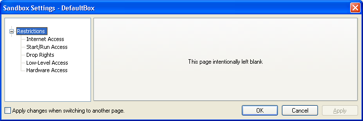
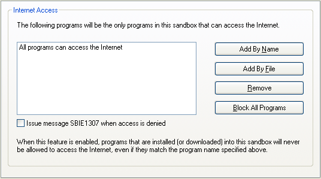
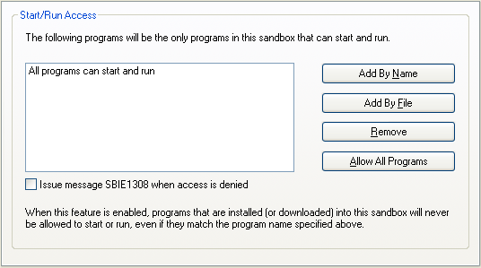
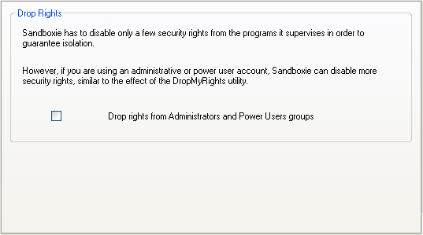
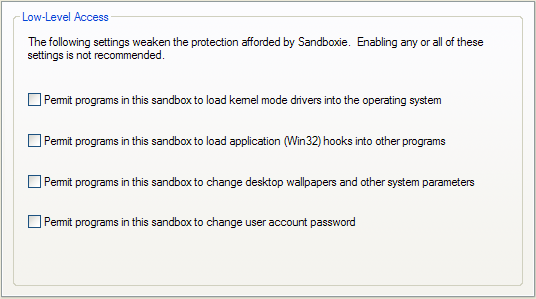
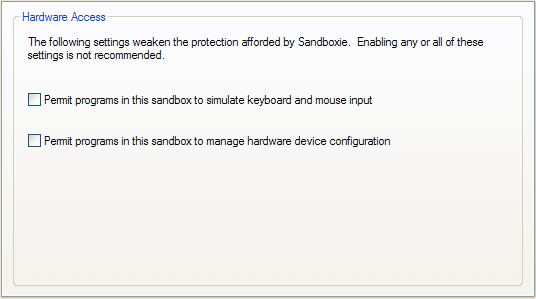

Restrictions Settings
"Restrictions" Settings Group
Sandboxie Control > Sandbox Settings > Restrictions

Settings in this section are intended to alter the default set of restrictions that Sandboxie places on programs running in the sandbox.
- You can place additional restrictions on programs, to tighten the security of the sandbox.
- You can relax some of the default restrictions, which is normally not recommended, but may enable some esoteric programs to work.
Internet Access
Sandboxie Control > Sandbox Settings > Restrictions > Internet Access

Use these settings to select which programs, if any, will be allowed to access the Internet in the sandbox. Initially, all programs in the sandbox can access the Internet.
Use the Add by Name button to add a program by typing its explicit executable name. Alternatively, use the Add by File button to navigate to the program folder and select its program executable. Blocking of SMB/CIFS which you can block as well by visiting BlockPort
When any restrictions are in effect, programs that are installed (or downloaded) into the sandbox will never be allowed to access the Internet.
Use the Remove button to remove some program previously added to the list.
The button Block All Programs prevents all programs in the sandbox from accessing the Internet. When this mode is in effect, the button changes to Allow All Programs, and when clicked, will undo the effect of blocking all programs.
Issue message SBIE1307 when access is denied: When a program is restricted due to this setting, Sandboxie can issue a notification message. Use this checkbox setting to indicate whether you would like to receive these notifications. See also message SBIE1307.
You can also configure this setting in the Program Settings window.
Related Sandboxie Ini settings: ClosedFilePath, Notify Internet Access Denied.
Start/Run Access
Sandboxie Control > Sandbox Settings > Restrictions > Start/Run Access

Use these settings to select which programs, if any, will be allowed to start and run in the sandbox. Initially, all programs in the sandbox can start and run in the sandbox.
Use the Add by Name button to add a program by typing its explicit executable name. Alternatively, use the Add by File button to navigate to the program folder and select its program executable.
When any Start/Run restrictions are in effect, programs that are installed (or downloaded) into the sandbox will never be allowed to start or run.
Use the Remove button to remove some program previously added to the list. The Allow All Programs has the same effect as clicking Remove on each and every entry that appears in the list.
Issue message SBIE1308 when access is denied: When a program is restricted due to this setting, Sandboxie can issue a notification message. Use this checkbox setting to indicate whether you would like to receive these notifications. See also message SBIE1308.
You can also configure this setting in the Program Settings window.
Related Sandboxie Ini settings: ClosedIpcPath, Notify Start Run Access Denied.
Drop Rights
Sandboxie Control > Sandbox Settings > Restrictions > Drop Rights

The setting in this page causes Sandboxie to strip administrative rights from programs running in this sandbox.
Specifically, the security credentials used to start the sandboxed program will not include membership in the Administrators and Power Users groups.
Note that this has little effect if you are already running under a non-Administrator user account.
Related Sandboxie Ini settings: DropAdminRights.
Low-Level Access -REMOVED
Hardware Access has been removed from Sandboxie v4 and up.
Previous versions of Sandboxie should not be used and they may not function.
Sandboxie Control > Sandbox Settings > Restrictions > Low-Level Access

This category manages restrictions for several types of global operations which are restricted in some way within the sandbox. Please see the associated Sandboxie Ini settings for more information.
-
Permit programs in this sandbox to load kernel mode drivers into the operating system
- Related Sandboxie Ini settings: BlockDrivers
-
Permit programs in this sandbox to load application (Win32) hooks into other programs
- Related Sandboxie Ini settings: BlockWinHooks
-
Permit programs in this sandbox to change desktop wallpaper and other system parameters
- Related Sandboxie Ini settings: BlockSysParam
-
Permit programs in this sandbox to change user account password
- Related Sandboxie Ini settings: BlockPassword
- See also message SBIE1309.
Hardware Access -REMOVED
Hardware Access has been removed from Sandboxie v4 and up.
Previous versions of Sandboxie should not be used and they may not function.
Sandboxie Control > Sandbox Settings > Restrictions > Hardware Access

This category manages restrictions for three types of global operations which are restricted in some way within the sandbox. Please see the associated Sandboxie Ini settings for more information.
-
Permit programs in this sandbox to simulate keyboard and mouse input
- Related Sandboxie Ini settings: BlockFakeInput
- See also message SBIE1304.
-
Permit programs in this sandbox to manage hardware device configuration
- Related Sandboxie Ini settings: Template=PlugPlay
- This setting permits a program to update configuration and drivers for hardware devices.
You are advised to keep the hardware access settings in their default, disabled state.
However, when running games or other full screen applications in the sandbox, it may be useful to permit the simulation of keyboard and mouse input.